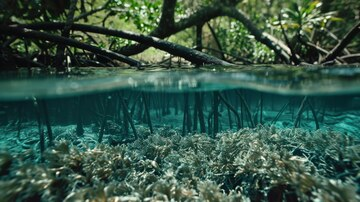
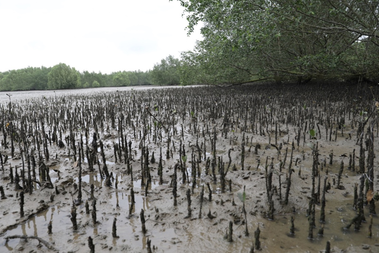

1
2
3
4
Lesson 2:
Threats to Mangroves & Why We Must Track Changes
Objectives
Name two human-driven and two natural threats to mangroves
Explain how losing mangroves hurts communities, economies, and ecosystems
Describe why long-term monitoring matters for effective conservation
Mangrove Under Siege: The Threat Landscape
1. Human (Anthropogenic) Threats
Coastal Development & Aquaculture
Shrimp ponds and housing estates often replace dense mangrove stands
Example: In Southeast Asia, over 20 % of mangroves were lost to shrimp farms in the past three decades
Local highlight: Manjung’s shoreline expansion for ports and tourism encroaches on Taman Paya Bakau
Pollution & Runoff
Industrial effluents, untreated sewage and agrochemicals leach into coastal waters
Mangroves filter sediments, but chemical overload stunts growth and poisons wildlife

Clear water through mangrove roots

Brown, polluted water smothering pneumatophores
2. Natural Threats
Sea-Level Rise & Salt Intrusion
Rising seas drown roots; excessive salinity curbs seedling survival
Projections: Malaysia could lose 10–15 % of low-lying mangroves by 2050
Intense Storms & Wave Action
Typhoons and monsoon surges tear out prop roots and topple trees
While mangroves buffer waves, repeated storms leave meadows too damaged to recover quickly
Analogy: Imagine mangroves like a sponge—soaking up energy. Too many “squeezes” (storms) wear it out
Ripple Effects of Mangrove Loss
Coastal Vulnerability
Erosion & Flooding:
Without root networks, beaches erode 3 times faster
Storm Impact:
Villages behind cleared mangroves face stronger winds and higher storm surge
Food & Livelihoods
Fisheries Collapse:
Nursery habitats disappear; local fish catches drop up to 40%
Tourism Decline:
Eco-tourists skip muddy, barren shorelines—hurting small businesses
Climate & Carbon
Carbon Release:
Cutting 1 ha of mangroves can release 3–8 tonnes of CO₂ instantly
Lost Sink:
Degraded mangroves capture far less carbon each year
Case Study: After a decade of clearance for aquaculture, a Malaysian coastal village saw flood damages jump tenfold
Tracking Changes: Why It’s Critical
Early Warning
Detect hotspots of rapid deforestation before it’s irreversible
Measure Restoration Success
Compare before/after NDVI maps to see if replanted areas are thriving
Data-Driven Policy
Detect hotspots of rapid deforestation before it’s irreversible
Community Engagement
Sharing easy-to-read maps with locals sparks stewardship and watchdog groups
Lesson 2 Quiz: Threats to Mangroves
Next
Coming Up Next
In Lesson 3, we’ll dive into remote sensing—seeing exactly how satellites and NDVI scores let us map, monitor, and protect mangroves from space!
Next Lesson